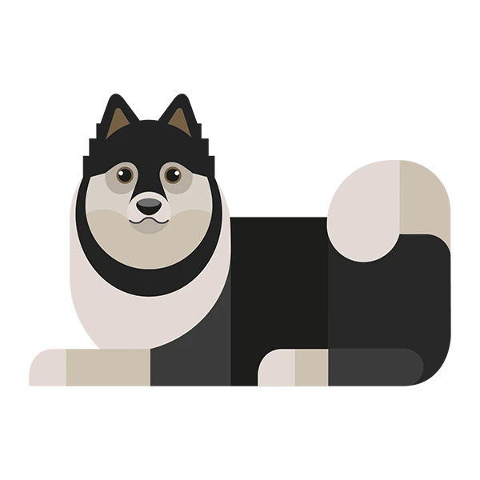

>>PORFOLIO PERSONAL
Agostina Salgado

UN POCO SOBRE MI
>
Como dice en uno de los títulos, me llamo Agostina Salgado, sor argentina
y desde que nací he vivido aqui en la ciudad de Rafaela.
Soy estudiante de la UNRaf y actualmente tengo 18 años. Vivo con mis padres y mi perro (Rocco), ademas de mis dos hermanos: una hermana mayor que ahora vive en Lemhan; y mi hermano menor.
Desde el preescolar hasta la secundaria, he asistido a la escuela Domingo de Oro, el la cual 'ejercí' la modalidad relacionada a lo biológico, puesto que no estaba segura con la demás. Dicho esto, lo mismo sucedió a la hora de escoger la carera universitaria en la cual me encuentro, debido a que, apesar de que es una de las mas interesantes y relativamente inovadoras de la universidad o el país, la verdad es que desde la secundaria nunca tuve una meta a largo plazo relacionada a una carrera.
Por otro lado, no tengo muchos pasatiempos debido a que suelo aburrirme con facilidad, sin embargo, desde niña siempre me ha gustado dibujar y leer; y, hasta hace algunos pocos años, encontré en los videjuegos otra manera más divertida de pasar el rato. Me encantan los animales y, con respecto a mis gustos musicales, estos son muy variados, pero en general suelo escuchar desde música pop/rap (en ngles) hasta bandas de kpop.
DATOS EXTRAS
COSAS QUE ME GUSTAN
Como he mencionado, me gusta dibujar y, de vez en cuando, pintar cuadros.
Bailar, aunque suelo hacerlo en la privacidad de mi casa.
Llevar a pasear a mi mascota.
Ir a bibliotecas, cines, teatros, cafeterías y/o parques.
Juntarme con mis amigos.
La lluvia.
Pasar un par de horas jugando a mi juego favorito en mi PC.
El café y las bebidas calientes en general.
Levantarme muy temprano.
Escuchar música. Mis artistas favoritos incluyen CodyFry, Faouzia, DuaLipa, etc.
COSAS QUE NO ME GUSTAN
Lugares con mucho ruido.
Las multitudes.
Comidas muy picantes o dulces.
El verano en general.
Las alturas.

hola ago